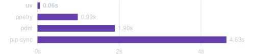

In this post, I will share my experience with transitioning from pip / older uv APIs to the new uv APIs.
Introduction
uv is the new kid on the Python package manager block and it’s been making waves. It’s self-described as “an extremely fast Python package and project manager, written in Rust”. The benchmark results are impressive:

I started incorporating uv into the workflow of my Python projects back in early 2024, when it was still version 0.2.x. Back then, uv adopted the pip-tools API and aimed to be a drop-in replacement for pip-tools, which was actually what we were using at the time. The transition was smooth and we didn’t have to change much in our workflow. However, we were also aware of the various limitations of pip-tools, such as having to manage separate requirements.txt and requirements-dev.txt files, which sometimes led to inconsistencies between the two. Thankfully, recent versions of uv have added a new set of uv-native APIs that use a single lockfile in TOML format, which makes packaging and sharing dependencies much easier. In this post, I will share my experience with transitioning from pip / older uv APIs to the new uv APIs.
Moving dependencies from requirements.txt to uv.lock
The first step in transitioning to the new uv APIs is to move your dependencies from requirements.txt to uv.lock. I want to keep the versions between the old requirements file and the new lockfile as similar as possible, while also making sure that both dev and non-dev dependencies are included in the lockfile. In order to achieve that, we first need to generate a new lockfile using the uv CLI.
Assume that a pyproject.toml file exists in the current project, we can generate a new lockfile by running the following command:
uv lockThis will generate a new lockfile in the current directory. This lockfile most probably will contain different versions of the same package, especially if the top-level packages in pyproject.toml are unconstrained (i.e. not pinned). To compare the versions between the old requirements file and the new lockfile, we can write a simple Python script that reads both files and compares the versions of the packages.
First, let’s create a function to compare the versions:
from pathlib import Path
import pandas as pd
def compare_version(lockfile: str, requirements: str) -> pd.DataFrame:
lockfile_path = Path(lockfile)
requirements_path = Path(requirements)
if not lockfile_path.exists():
raise FileNotFoundError(f"Lockfile {lockfile} not found")
if not requirements_path.exists():
raise FileNotFoundError(f"Requirements file {requirements} not found")
lockfile_packages = []
with open(lockfile_path, "r") as f:
lines = f.readlines()
for i, line in enumerate(lines):
if line.strip().startswith("name = "):
if i > 0 and lines[i - 1].strip() == "[[package]]":
if i < len(lines) - 1 and lines[i + 1].strip().startswith("version = "):
name = line.split("=")[1].strip().strip('"')
version = lines[i + 1].split("=")[1].strip().strip('"')
lockfile_packages.append({"name": name, "version": version})
lockfile_df = pd.DataFrame(lockfile_packages)
requirements_packages = []
with open(requirements_path, "r") as f:
lines = f.readlines()
for line in lines:
if not line.strip().startswith("#") and line.strip():
name, version = line.strip().split("==")
requirements_packages.append({"name": name, "version": version})
requirements_df = pd.DataFrame(requirements_packages)
df = pd.merge(lockfile_df, requirements_df, on="name", how="outer", suffixes=("_lockfile", "_requirements"))
return dfAfter that, a need that may arise is to “sync” the versions from the old requirements file to the new lockfile on a best-effort basis. This can be done by writing another function:
def sync_to_lockfile(lockfile: str, df: pd.DataFrame) -> None:
lockfile_path = Path(lockfile)
new_lockfile = []
with open(lockfile_path, "r") as f:
lines = f.readlines()
for i, line in enumerate(lines):
if i < 2:
new_lockfile.append(line)
elif line.strip().startswith("version = "):
if i > 0 and lines[i - 2].strip() == "[[package]]":
if lines[i - 1].strip().startswith("name = "):
name = lines[i - 1].split("=")[1].strip().strip('"')
new_version = df.query("name == @name")["version_requirements"].values[0]
if new_version is None or str(new_version) == "nan":
new_lockfile.append(line)
else:
new_lockfile.append(f'version = "{new_version}"\n')
else:
new_lockfile.append(line)
lockfile_path.rename(lockfile_path.parent / f"{lockfile_path.stem}_old{lockfile_path.suffix}")
print(f"Old lockfile renamed to {lockfile_path.parent / f'{lockfile_path.stem}_old{lockfile_path.suffix}'}")
with open(lockfile_path, "w") as f:
f.writelines(new_lockfile)
print(f"New lockfile saved to {lockfile_path}")Finally, we can put it all together:
if __name__ == "__main__":
import argparse
parser = argparse.ArgumentParser(description="Compare two versions of a lockfile and requirements file")
parser.add_argument("--lockfile", help="Path to the lockfile")
parser.add_argument("--requirements", help="Path to the requirements file")
parser.add_argument(
"--sync-to-lockfile",
action=argparse.BooleanOptionalAction,
default=False,
help="Sync all versions from the requirements file to the lockfile",
)
args = parser.parse_args()
df = compare_version(args.lockfile, args.requirements)
diff = df.query("version_lockfile != version_requirements")
print(diff)
diff.to_csv("package_diff.csv", index=False)
if args.sync_to_lockfile:
sync_to_lockfile(args.lockfile, df)This script can be run with uv, however we need to add a little section at the top of the script to specify pandas as a script-level dependency:
# /// script
# requires-python = ">=3.10"
# dependencies = [
# "pandas",
# ]
# ///Then running the script is trivial:
`uv run --python=3.10 --no-project scripts/compare_version.py --lockfile=./uv.lock --requirements=./requirements-dev.txt` This script will compare the versions between the old requirements file and the new lockfile, and save the differences to a CSV file. If the --sync-to-lockfile flag is set, it will also sync the versions from the old requirements file to the new lockfile.
To summarise, the workflow would be:
Generate a new lockfile using
uv lockRun the script the first time to review the differences
uv run --python=3.10 --no-project scripts/compare_version.py --lockfile=./uv.lock --requirements=./requirements-dev.txtRun the script again, this time with the
--sync-to-lockfileflag set to sync the versions from the old requirements file to the new lockfileuv run --python=3.10 --no-project scripts/compare_version.py --lockfile=./uv.lock --requirements=./requirements-dev.txt --sync-to-lockfileReview the changes in the lockfile and run
uv syncto both install the dependencies add see ifuvdetects any issues or conflicts.
For example, one of my projects generated the following output (project-name is a project I’m working on):
name version_lockfile version_requirements
6 appnope 0.1.4 NaN
18 clickhouse-connect 0.8.14 NaN
19 clickhouse-driver 0.2.9 NaN
20 colorama 0.4.6 NaN
59 lz4 4.3.3 NaN
108 pywin32 308 NaN
109 project-name 0.0.1 NaN
159 tzlocal 5.2 NaN
168 zstandard 0.23.0 NaNThe entire script is available here. Feel free to use it or provide feedback on how to improve it.
Updating your Dockerfile
If you are using Docker to build your project, you will need to update your Dockerfile to use uv instead of pip to make full use of the new lockfile. There have been multiple examples of this (uv also provies an official guide in their docs), but I’ve found that this article by Hynek Schlawack works best for me. For a quick reference, here is an example of a Dockerfile that uses uv:
FROM python:3.10 as build
COPY --from=ghcr.io/astral-sh/uv:0.4.22 /uv /bin/uv
ENV UV_LINK_MODE=copy \
UV_COMPILE_BYTECODE=1 \
UV_PYTHON_DOWNLOADS=never \
UV_PYTHON=python3.10 \
UV_PROJECT_ENVIRONMENT=/app
COPY pyproject.toml /_lock/
COPY uv.lock /_lock/
RUN --mount=type=cache,target=/root/.cache <<EOT
cd /_lock
uv sync \
--frozen \
--no-dev \
--no-install-project
EOT
FROM python:3.10
COPY --from=build /app /app
COPY . /app
WORKDIR /app
ENV PATH=/app/bin:$PATH
EXPOSE 9000
CMD ["/app/bin/uvicorn", "main:app", "--host", "0.0.0.0", "--port", "9000", "--reload", "--workers", "4"]A note local development with pre-commit
For local development, you can use uv with a workflow similar to pipenv or poetry. This has been documented very thoroughly by in the offical uv docs, so I won’t go into too much detail here. If you go through these documentation, you will see that one benefit of using uv most things can be run with either uv run or uvx, which is extremely convenient and makes the Python development exprience closer to that of cargo or npm.
However, at the moment, what I have found is that when making commits with pre-commit, your environment still must be activated:
source .venv/bin/activateThis is kind of a bummer, but hopefully I might be wrong. Either way, I’m looking forward to seeing how uv develops in the future, particularly with its integration with other tools like pre-commit.